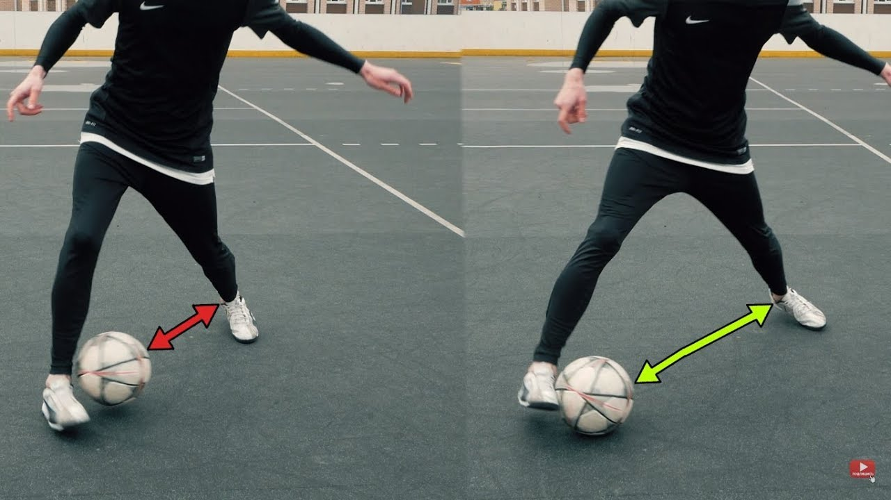

Эластико – это футбольный приём, позволяющий при помощи обманного движения корпусом в сторону обмануть защищающегося соперника, заставив его сдвинуться в сторону и освободить пространство для атаки.
Данный финт стал знаменитым и известным благодаря бразильскому нападающему Роналдиньо, хотя при этом, вероятней всего, автором данного шедевра является другой бразильский футболист Роберто Ривелино.
Увидеть финт в профессиональном футболе — большая редкость. Но только если вы не личный фанат Неймара, следящий за всеми выступлениями этого футболиста!
Футбольная радуга - это красивый финт, который заводит толпу, и который, кроме того, является средством нападения, чтобы протолкнуть мяч вперед. Это достаточно сложная техника, которая включает использование ступни для того, чтобы поднять мяч по ноге. Затем вы должны пнуть мяч противоположной пяткой, чтобы мяч аккуратно пролетел по дуге над головой.
.jpg)
Благодаря обманному движению, можно дезориентировать противника и передать пас на свободного игрока в непредсказуемом направлении.
.jpg)